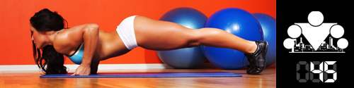
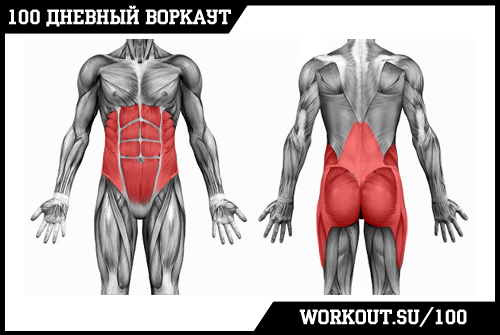

100 Дневный воркаут
<==== Вернуться к оглавлению
День 45. Кубики пресса и мышцы стабилизаторы

Думаю бессмысленно будет отрицать тот факт, что именно пресс является для многих из нас сигналом о том, что его обладатель находится в отличной физической форме и регулярно занимается. Пресс визуально находится в центре тела и соединяет собой верхнюю и нижнюю половины туловища. Поэтому даже если у вас все хорошо и с торсом, и с руками, и с ногами, но с прессом не очень - внешне вы будете смотреться на порядок хуже.
Неудивительно, что в этой связи мышцам пресса многие уделяют повышенное внимание, и хотя я считаю, что тем, кто только начинает свой путь в воркауте с программы
100 Дневный воркаут
, ещё рано думать о кубиках на животе. Тем не менее в преддверии продвинутого блока я думаю стоит осветить тему.
Мышцы кора (торса)

Мышцы кора - это целый комплекс мышц, которые отвечают за стабилизацию таза, бедер и позвоночника.
В частности к мышцам кора относятся: косые мышцы живота, поперечная мышца живота, прямая мышца живота, малые и средние ягодичные мышцы, приводящие мыцшы, мышцы задней поверхности бедра, подостная мышца, клювовидно-плечевая мышца и целый ряд других. Следует отметить, что все эти мышцы активно участвуют в работе при выполнении всех 4-х базовых упражнений из нашей программы!
Именно поэтому я в своё время настаивал на том, чтобы вы направили все свои силы и энергию на то, чтобы научиться делать эти упражнения (подтягивания, приседания, отжимания от пола и выпады) максимально правильно.
Главный смысл мышц кора заключается в том, чтобы стабилизировать ваше тело в пространстве и помогать вам сохранять баланс. И хотя их работу сложно увидеть со стороны, но довольно легко почувствовать её на себе. Проведите небольшой эксперимент. Сначала попробуйте поотжиматься от пола. Затем, попробуйте поотжиматься от футбольного или баскетбольного мяча. Теперь заберитесь на брусья для отжиманий, и примите упор лёжа, поставив руки только на один из брусьев, так чтобы и ноги, и руки были на одной прямой. И попробуйте поотжиматься. Чувствуете разницу? Причина по которой на нестабильных или сложных поверхностях выполнять упражнения гораздо сложнее именно в том, что в работу включается большое количество мышц-стабилизаторов, которые у многих недостаточно тренированы.
Следует так же отметить, что зачастую именно они сдают первыми и вызывают изменения в технике (например прогибы в позвоночнике при отжиманиях). И нужно ли говорить о том, что для изучения сложных элементов, пришедших в воркаут из гимнастики, без хорошо натренированных мышц кора и думать не стоит? Поэтому, не только можно, но и нужно уделять достаточное внимание этой группе мышц!
Есть два простых способа тренировки мышц кора:
1) При выполнении базовых упражнений делать акцент на напряжении этих мышц (о чём я уже писал ранее, рассматривая технику выполнения), то есть корпус должен быть прямым, живот втянутым и напряженным и т.д.
2) Добавить элемент нестабильности (для тех, кто уже достиг определённого уровня), например уже упомянутые выше отжимания на фитболе, или отжимания с перестановкой рук, или плиометрические отжимания.
Ну и наконец, для самых отчаянных, предлагаю вашему вниманию небольшой комплекс, разработанный целенаправленно для тренировки мышц кора, представленный великолепным Дмитрием Яшанькиным:
Пресс
Ну и если говорить конкретно о прессе, то я бы хотел выделить несколько важных моментов.
Новичкам.
Как я уже говорил ранее, если вы только начинаете свои тренировки (и тем более если 100 дневный воркаут для вас стал тем самым началом и отправной точкой), то вам нет особого смысла делать изолированные упражнения на пресс. Поскольку мышцы пресса участвуют во всех тех упражнениях, которые вы делаете в рамках программы, и поскольку получаемой нагрузки, на данном этапе, должно быть достаточно.
Про кухню.
Очень часто на просторах интернета можно услышать, что "пресс делается на кухне, а не в зале", и что "у всех нас есть пресс, просто не у всех он виден за жиром". И хотя в этих выражениях есть доля правды, но я не знаю ни одного обладателя хорошего пресса, который бы его не тренировал целенаправленно. Все эти кухни с их продуктами с низким содержанием жира это, конечно, здорово, но если вы не будете тренировать пресс, то кубиков у вас просто не будет.
Пресс - это мышца, и как и у любой мышцы у неё есть объём. Если будете правильно питаться, но не будете тренировать пресс - у вас будет плоский живот, но если вы хотите рельефные кубики, то тренироваться нужно обязательно и об этом ниже.
Тренировки.
Существует огромное количество разнообразных видео про тренировки пресса (а YouTube так просто вообще завален этим), но, если честно, эффективность большинства из них довольно сомнительна. Особенно, когда вас учит качать пресс человек, у которого его нет. Тем не менее есть пятерка видео, которые уже неоднократно доказали свою эффективность, и я лично знаю людей, построивших превосходные кубики благодаря тренировкам по этим видео.
Видео №1: Сергей Спиридонов
Комплексная тренировка пресс из 5 упражнений от того, кто явно знает толк в накачке пресса!
Видео №2: Илья Городничев
Небольшая, но эффективная подборка упражнений на пресс, которые можно выполнять дома и на площадке!
Видео №3: Валентин Новиков
И ещё одно видео о том, как нужно и как не нужно делать упражнения на пресс, чтобы добиться результатов.
Видео №4
-
P4P Abs Level 2
(начинающие могут начать с уровня 1) - очень интенсивный набор упражнений с минимальными промежутками отдыха, но это именно то, что нужно, если ваша цель получить отличный пресс!
Видео №5
-
8-минутная тренировка пресса от Jamie Alderton
, по сути довольно похожа на Видео №2, но отличается по содержанию. И так же эффективна!
Эти пять видео проверены на 100%. Я и сам тренируюсь по ним, чередуя время от времени, поэтому и рекомендую их.
======> День 46. Мифы о силовых тренировках